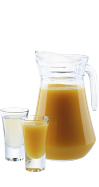

Апельсиновый чейзер — Модная подача!
Небывалый фурор на конференции международного клуба дегустаторов текилы вызвали «чейзеры» — оригинальная альтернатива привычным коктейлям и лайму с солью…
Легенда коктейля
Небывалый фурор на конференции международного клуба дегустаторов текилы вызвали «чейзеры» — оригинальная альтернатива привычным коктейлям и лайму с солью.
Чейзеры (в переводе «преследователи»), идеально раскрывающие вкус текилы, моментально оказались на пике популярности, благодаря их уникальной способности превращать послевкусие в настроение, а настроение — в модную вечеринку. Апельсиновый чейзер с корицей стал лауреатом в номинации «Апельсиновый чейзер с корицей».